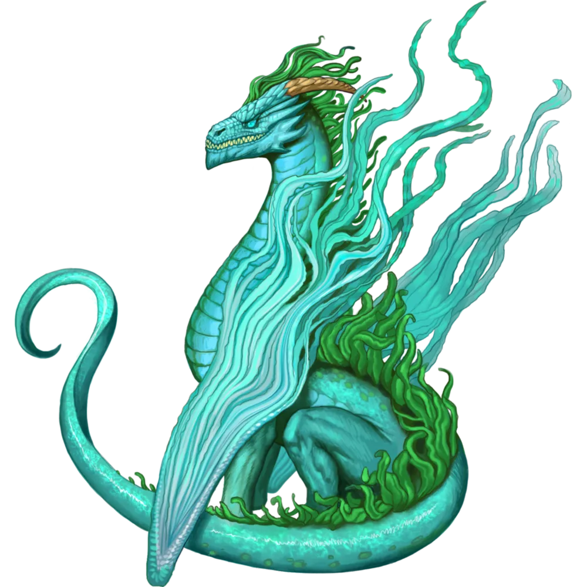
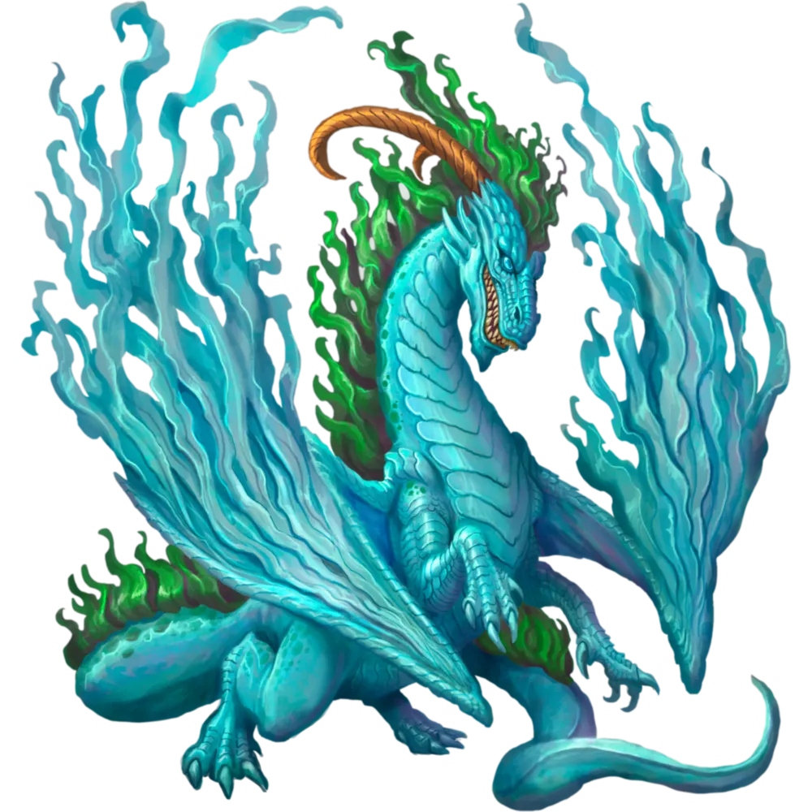

各年龄段数据卡
巨藻龙是一类水陆两栖的莱希龙，身披虹彩熠熠的鳞片，修长瘦削的躯干上覆满藻类与一簇簇纠缠交错的水草。大多数巨藻龙要么在藻类繁茂的淡水湖泊中筑巢，要么栖身于沿海的巨藻森林之间，选址时尤为看重能否同时便捷地往返于深水区与水面；而且每头巨藻龙往往都会将选定的居所视作自己独占的领地。话虽如此，巨藻龙却经常结成由竞争对手组成的聚落，特意把巢穴建在其他巨藻龙附近。在巨藻龙的生命中，劲敌往往是最重要的人；它们把几乎全部的时间与精力都倾注在这些竞争关系上，甚至为此冷落了朋友与家人，也早已是司空见惯之事。巨藻龙自己对此毫不觉得古怪：在它们看来，唯有劲敌才真正懂得自己的挣扎、希冀、渴望与需求；反观朋友与家人，往往只求一团和气，为了礼貌或融洽便不惜粉饰太平、敷衍迁就。而一位劲敌却愿意与自己彼此鞭策、同台较量，在嫉妒与钦佩交织的复杂情感驱使下携手奋进――正因他们从不伪装自己，劲敌才在巨藻龙心中占据着无比纯粹而崇高的特殊地位。 苏米纳里亚尔在靛青群岛最声名显赫、广为人知的巨藻龙之中，苏米纳里亚尔当属翘楚――这位珠宝巨匠凭借小巧精致的吹制玻璃耳坠、吊坠与雕花发梳，就连在非龙类族群中也享誉盛名。苏米纳里亚尔不仅以传世佳作名扬靛青群岛，其巢穴“加拉奈特厅堂”亦同样如雷贯耳：足足三十六位艺术家在此拜入巨龙门下充当学徒，潜心打磨各自的技艺。尽管收藏家们对苏米纳里亚尔的亲手真迹趋之若鹜，但出自其门下的许多学徒如今也已各自功成名就、名利双收；正因如此，想要拜师入门的候补名单往往一排便是数十载光阴。 好胜善变而又酷爱戏剧性排场的巨藻龙，对自己特立独行的审美眼光，以及身为艺术家与艺术收藏家的双料造诣深感自豪。比起色彩，它们在创作时更偏爱运用材质肌理与造型轮廓的对比――因为质感与形态放诸四海而皆准，而色彩在幽邃漆黑的深海海底却会褪色失真，况且对于依赖黑暗视觉的生物或天生色盲的生灵而言，色彩打从一开始便毫无意义。巨藻龙的宝库堪称举世无双的艺术殿堂，珍藏着令人叹为观止的雕塑、精巧绝伦的玻璃器皿，以及各类能够经受住湖底或深海巢穴水下保存环境的艺术瑰宝。 巨藻助手与其他大多数种类的巨龙相比，巨藻龙更喜欢在巢穴中雇佣学徒或帮手。不同于其他巨龙巢穴里常见的守卫或对外跑腿的代理人，这些助手主要是巨龙的艺术同道、门徒，以及协助打理巢穴内外各项艺术工程的副手。当然，威名赫赫或实力格外强横的巨藻龙，或许也能招揽到身兼数职的奇才――例如一位既精于雕琢又可帮忙看家护院的水生美杜莎雕塑家――但即便如此，巨藻龙在挑人时通常仍会将艺术天赋排在实战身手之前。 巨藻龙平日里喜欢在身上披挂编织精巧的渔网披饰，上面缀满贝壳、珍珠、珊瑚或类似饰物，以便随时随地展示自己的艺术才华与珍贵藏品。它们的鳞片缝隙间生长着海藻与其他水生草本，而巨藻龙在修剪、塑形自身体表海藻以契合当下审美偏好这件事上，往往挑剔到了极点。在这些繁复装点之下，巨藻龙的鳞片闪烁着流光溢彩的虹泽，在深浅不一的绚丽蓝绿之间变幻流转。 世间万物之中，龙族本就向来与“节制”二字无缘；然而即便在其他巨龙支系眼中，巨藻龙对奢华排场与极繁主义的痴迷也常常被讥为俗艳浮夸。不过这类评价非但不会令巨藻龙收敛，反而鼓舞它们变本加厉地拥抱极致的张扬炫目――它们根本不在乎旁人怎么看自己，甚至觉得被人视作奢靡浮华的化身颇为有趣，乃至正中下怀。毕竟，宁可被人说成浮夸奢靡，也总好过显得像个不懂艺术的庸俗门外汉！巨藻龙将自家的宝库视为自我形象的投射与高雅品味的见证。它们常将宝库布置成金碧辉煌的艺术长廊，随时乐意带领访客参观自己得意的藏品，盼着能在其他巨龙心中激起羡慕嫉妒之情。正是这种对个人美学的无尽追求，以及沉浸在劲敌嫉妒目光中的快意，驱使着巨藻龙在追寻至高审美极乐的永恒征途上，不断攀向愈发璀璨夺目的巅峰。 巨藻龙的宝库巨藻龙是狂热的艺术收藏家，尤其钟情于雕塑及其他能够在水下长期陈列保存的艺术品。它们的宝库主要由艺术佳作而非普通宝石金银构成。大多数巨藻龙都会将自家的宝库向公众开放，打造成设计考究的私人博物馆。这些巨龙还会彼此暗中较劲：比谁的馆藏规模最宏大、最令人震撼，比谁的展品吸引的游客最多，甚至比谁能聘请到最顶尖的建筑大师、造出最气派非凡的博物馆殿堂。 除了规模宏大的博物馆式宝库外，许多巨藻龙还会精心培育水生植物园圃，采收其中的水草炼制种类繁多的实用药物与敷膏，同时也用它们提取颜料及筹备艺术创作所需的各类素材。年长的巨藻龙往往是学识渊博的医者与草药大师――只不过它们心中大多暗自憧憬着有朝一日，某位走投无路的劲敌不得不硬着头皮登门求医，全仰仗自己的慷慨仁慈与妙手回春方能捡回一条性命。饶是如此，它们的医术确是货真价实的真才实学，仰赖巨藻龙精湛医术求治的病患极少会失望而归；毕竟这直接关乎巨龙本人的颜面与尊严，它们自会确保提供最高水准的救治――倘若失手搞砸了，岂不是正好给劲敌递上四处散播流言蜚语的话柄？ “生命雕塑家”菲迪拉希安只要你研究巨龙的年头足够久，就必定听过数不清的关于巨龙创造新生命形态的神话传说。事实上，有些巨龙支系甚至坚信，世间除巨龙以外的一切凡俗生灵皆是由自家先祖亲手造就的。此外，你也肯定没少听过孤独的雕塑家以黏土、顽石或手边随便什么材料雕琢出一位伴侣的老套故事――这类桥段简直一抓一大把，不值一个铜板。 然而，太古巨藻龙菲迪拉希安之所以与前赴后继的无数同行截然不同，恰恰在于当她也亲手雕出一尊惟妙惟肖、臻至化境以至于当场活过来的雕像时，她的反应竟淡定得令人瞠目结舌。传说里的那些雕塑家国王每逢此刻总会喜极而泣、瘫倒在地，向自己的造物倾诉海枯石烂（且自恋得令人起鸡皮疙瘩）的爱意；反观菲迪拉希安，她只是抬眼瞥了一下，随口说道：“噢，这倒新鲜……挺好的吧？正好，你来帮忙收拾下屋子，主厅里的装饰最近有点乱套了。”说罢她便径直埋头继续手里的活计，将周遭一切抛诸脑后，整整好几个星期都没再过问过这尊新生造物半句――只因她早已全神贯注地扑在了当时迷住自己的下一个新点子上。 吟游诗人们格外津津乐道“生命雕塑家”的这桩轶事，因为它将她的本性刻画得淋漓尽致：对于神话传说里的那些凡俗雕塑家而言，这等成就是毕生心血的巅峰结晶，是足以改写一生的神迹；但对菲迪拉希安来说，那不过是她漫长人生中又一个才华横溢、巧夺天工的寻常日子罢了。说句实在话，打从她的工坊里诞生问世的奇思妙作早已多得数不胜数，世人除了满怀敬畏地传唱她的奇谭之外别无他法――而这恰恰正合她意。在她看来，谈论她的人自然是越多越好；眼下她的赫赫声名早已传遍凡人与龙族之间，想来她本人对这一局面定然十分满意。 颠覆性艺术艺术作品往往因其赤裸直白、毫不掩饰地抒发创作者的情感与信念，而天然带有颠覆性或政治色彩。但另一方面，大多数巨藻龙内心最深沉的情感与信念，本就如同盘根错节的巨藻一般与艺术美学本身难解难分。因此，一头巨藻龙哪怕胸中毫无政治诉求、也无意颠覆现存秩序，单凭挖掘自身纯粹的内心世界，便足以创作出举世无双的传世杰作。然而，倘若哪位君王不开眼激怒了一头巨藻龙，沦为这头巨龙亲手创作颠覆性讽刺艺术的箭靶，那他可就大祸临头了――等到那场艺术思潮席卷天下之时，这位统治者只怕会悔不当初，宁可当初那头巨龙是直接亮出利爪朝自己扑过来。 她的巢穴宛如一座由活体构装体组成的奇幻仙境――这些生灵皆是在“生命雕塑家”雕琢出超凡入圣的杰作时自行觉醒生命而诞生的，其中许多至今仍在她身边担任助手。她在画廊中自豪地陈列着自己最钟爱的得意之作，其中不乏曾在世界各国掀起三十余场艺术革命的开山巨作。事到如今，在她那光怪陆离的艺术天地里，哪怕偶尔出现未曾完全料到的意外成果，也再没有什么事能让她大惊小怪了。 尽管菲迪拉希安将自己心中唯一真正的遗憾深藏不露，但她身边的几位构装体助手还是敏锐地察觉到了端倪，并悄悄向外界透了风声……她从未后悔自己结交（有时还是字面意义上亲手造出）的朋友，也从未后悔自己雕琢出的任何一件作品；唯独对漫长岁月里一路失去的那些劲敌，她心中怀着难以释怀的深深遗憾。 他们中的大多数都败给了时间――这位最为冷酷无情的评论家――以及终究难逃的厄运无常。菲迪拉希安年少时的劲敌，极少有人能一路幸存下来、与她并肩步入太古龙之境。 而另一些劲敌，则败给了她自己卓绝的天赋。让一位旗鼓相当的劲敌在目睹自己的杰作后心生绝望、心悦诚服地承认自己技高一筹，本是每一头巨藻龙梦寐以求的终极夙愿。然而菲迪拉希安却用亲身经历领悟到，巨藻龙在许愿时最好三思而后行：当一位又一位劲敌相继封刀放弃或撒手人寰之后，“生命雕塑家”猛然惊觉，世间竟已再无一人配做她真正的对手。而这，才是一桩彻头彻尾的悲剧。 她曾试过干脆亲手创造出更多劲敌，但那样做终究不是滋味；至于凡俗族裔里那些自以为能与她分庭抗礼的狂妄蠢货固然多如牛毛，可旁人的自欺欺人根本解不了这头太古龙的心头之痒。她明白，自己唯有寻得一位真正能与自己比肩齐驱的劲敌方能重拾快乐，而迄今为止她仍未遇上令自己满意的人选。不过换个角度看，这或许正是某位新锐艺术家一举成名、化作传奇的天赐良机――成为这位举世无双之太古龙的下一任宿敌。 各花入各眼艺术本就主观，美丑更是因人而异、各花入各眼。正因如此，倘若几位劲敌的技艺水准在伯仲之间，一头巨藻龙几乎不可能铁板钉钉地证明自家的艺术作品绝对胜过对手一筹。毕竟，甲观众或许钟情第一头巨藻龙的佳作，乙观众可能偏爱第二头的风格，而丙观众说不定又对第三头的作品赞不绝口；更何况某些设计大胆前卫、怪诞出奇的作品，还很容易触犯部分评论家与艺术鉴赏家的审美忌讳。唯有当某头巨藻龙拥有压倒性的绝对优势、足以跨越主观偏好的藩篱时，它才算真正“赢下”较量、令一众劲敌俯首称臣。不过在绝大多数情况下，这种难分高下的僵局其实对巨藻龙更为有利――总好过把所有对手统统耗尽，只剩自己孤零零地站在伟大神坛之上独孤求败。 珠宝匠之行：加拉奈特厅堂之旅 A Trip to the Jeweler's: Journey to Garlanite Hall先前我前往靛青群岛搜集有关狂野龙的后续资料时，曾有幸参观了“加拉奈特厅堂”――亦即远古巨藻龙、著名珠宝大师苏米纳里亚尔的巢穴。当苏米纳里亚尔听说我可能还会去采访他们的几位竞争对手时，便迫不及待地向我敞开了工坊巢穴的大门，允许我毫无保留地参观访问――依我揣测，此举多半是为了让那些劲敌羡慕嫉妒恨吧。不过平心而论，面对才华横溢又全心投入的苏米纳里亚尔一手建立起的这份基业，那些劲敌恐怕确实免不了要眼红一番。 在采访工坊里三十余位学徒的过程中，我发现苏米纳里亚尔不仅将庞大的珠宝工坊管理得井井有条、水准极高，还会针对每位学徒各自的长处与短板，提供量身定制的私下授课与悉心指导。这是否意味着苏米纳里亚尔此举纯粹是出于无私奉献呢？那倒未必！ 毕竟高徒出名师――学生越有出息，导师脸上便越有光彩，也越能收获一众眼红嫉妒的劲敌。 ――永光贤者卡利赞德雷克斯 |
 巨藻龙  巨藻龙 |